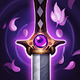

起手組件
 長劍
長劍提高前期 1、2 技與普攻傷害。
校正至 7.3d · 2026-10-28。Tier與配置是本站的模式策略判斷，不是官方勝率排名。
起手組件 → 一階鞋或首件核心（依壓力調整）→ 核心成裝 → 鞋子升級 → 情境後續裝。五件成裝加一雙鞋；鞋子兩張圖表示升級前後，不是同時購買兩雙。
提高前期 1、2 技與普攻傷害。

紅形態對前排能靠百分比傷害與護盾穩定換血，藍形態也能吃到爆發收益。

紅形態長戰快速疊減甲，生命與技能加速也很重要。

慨影：物理技能路線的穿透與條件緩速；不再附帶舊版重創，治療壓力需要另外安排重創來源。

慨影：降低物理爆發的立即壓力並獎勵參與擊殺；7.3a價格提高，不能忽略先做便宜防禦組件的時機。

後期切入後提供第二次作戰機會。

慨影：爆發之靴升級，以穿透支援物理技能爆發；面對反開威脅時可改防禦鞋。

慨影：水星之靴升級，針對控制與魔法爆發；魔法護盾不能當作物理傷害防護。

保留最可靠的進退與關鍵技能銜接；雪球戰車進場後仍可用閃現修正位置。

雪球命中後可等待隊友跟上再進場，讓近戰英雄在單線拉扯中擁有穩定的接戰與追擊角度。

紅形態最穩，1、2 技與普攻能快速疊層；藍形態也不浪費。

提高前中期技能與普攻壓力。

紅形態低血量吸血反打特別有效。

以現行傳奇：疾速取代已移除的傳奇：韌性，藉士兵／擊倒累積技能加速；此符文不提供韌性。

1 技位移、3 技穿牆與大絕都容易觸發。
1 技 > 2 技 > 3 技
ARAM 開局三個基礎技能各點 1 級，之後主升 1 技、次升 2 技；大絕能點就點。
未變身前不要把自己當完整刺客。多用 1、2 技碰英雄累積形態能量，3 技主要拿來找側角或短暫回復。
多數 ARAM 對局紅形態更穩：2 技擊飛後 1 技貼身，進入低血再用大絕躲爆發並回血。脆皮多才切藍形態快速一套離場。
大絕的 7.2 出口距離更好用。先確定落點再進人體內，避免出來仍在五人中央；守護天使與死亡之舞讓紅形態可以更敢做第二進場。

確定走藍形態且敵方脆皮多
替換黑色切割者，提升爆發與移速。
藍形態怕關鍵控制
替換死亡之舞，用法術盾提高切後成功率。
敵方護盾非常多
替換守護天使或黑切，快速削弱護盾。
標準 ARAM 最後可追溯倍率：近期官方未列慨影標準 ARAM 專屬百分比修正，本站維持 100%／100%。7.2 提高大絕離開目標的最大距離：基礎／紅形態 4→4.5、藍形態 6→6.5，並降低離開後操作鎖定。 本輪核對至7.3d，未以符文大亂鬥倍率覆蓋；官方未提供本英雄完整新版倍率總表，若遊戲內不同以當局模式增益為準。
慨影在大亂鬥以紅形態續戰較穩，但仍保留藍形態切後能力；技能與身法是核心，迷霧、單人強者、控場與跑速類能依形態放大進場、生存與追擊。
實戰使用方式：看遊戲增幅卡片下方的官方分類 → 點相同分類 → 優先看 S+／S／A；再依本局增幅方向選擇對應出裝路線。
造成傷害：95% → 105%
核心
一、二技能與大絕是兩種形態的主要輸出來源，技能循環永遠是核心。
核心
一技能與穿牆移動提供多次位移，能高頻利用身法增幅。
高適配
衝刺後的穿透、防禦與傷害對紅藍兩種形態都有效。
高適配
施放大絕無敵、保命重置與技能暴擊都能提高深切後容錯。
適配
紅形態二技能擊飛很強，但藍形態收益較低，因此控制類要看形態與單卡。
適配
三技能穿牆與側翼都需要機動，額外跑速能提高繞角與追擊效率。
技能／身法增幅多
星蝕、黑切與席利妲支撐技能傷害，再用死亡之舞與守護天使完成第二進場。 本路線已同步7.3c的一般裝備；增幅專屬替換另依抽卡決定。
紅形態對前排能靠百分比傷害與護盾穩定換血，藍形態也能吃到爆發收益。
紅形態長戰快速疊減甲，生命與技能加速也很重要。
慨影：物理技能路線的穿透與條件緩速；不再附帶舊版重創，治療壓力需要另外安排重創來源。
慨影：降低物理爆發的立即壓力並獎勵參與擊殺；7.3a價格提高，不能忽略先做便宜防禦組件的時機。
後期切入後提供第二次作戰機會。
慨影：爆發之靴升級，以穿透支援物理技能爆發；面對反開威脅時可改防禦鞋。
慨影：水星之靴升級，針對控制與魔法爆發；魔法護盾不能當作物理傷害防護。
迷霧／側翼增幅多
加入妖夢與夜色緣界，提高穿牆側切與一套爆發。
確定走藍形態且敵方脆皮多
替換黑色切割者，提升爆發與移速。
藍形態怕關鍵控制
替換死亡之舞，用法術盾提高切後成功率。
紅形態對前排能靠百分比傷害與護盾穩定換血，藍形態也能吃到爆發收益。
慨影：物理技能路線的穿透與條件緩速；不再附帶舊版重創，治療壓力需要另外安排重創來源。
後期切入後提供第二次作戰機會。
慨影：爆發之靴升級，以穿透支援物理技能爆發；面對反開威脅時可改防禦鞋。
慨影：水星之靴升級，針對控制與魔法爆發；魔法護盾不能當作物理傷害防護。
分類與單卡評級是本站條件式建議。新卡完整效果未核實時不補造數值；當局抽到的卡片會改變優先順序。
7.3d／2026-10-28：本輪核對公告共通差異、現行裝備與符文引用，保留 v123 的既有攻略。標準 ARAM 倍率沿可追溯歷史基準，未套用符文大亂鬥專屬倍率；Tier 為本站建議，非新版勝率或全技能實測。